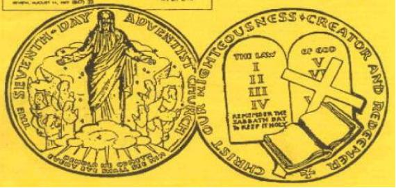

Seventh-day Adventists Clasp Hands With Rome
Quote from Adventist prophetess Ellen G. White (EGW):
When Protestantism shall stretch her hand across the gulf to grasp the hand of the Roman power, when she shall reach over the abyss to clasp hands with spiritualism, when, under the influence of this threefold union, our country shall repudiate every principle of its Constitution as a Protestant and republican government and shall make provision for the propagation of papal falsehoods and delusions, then we may know that the time has come for the marvelous working of Satan and that the end is near. —5T 451 (1885).
Ellen White predicted well over one hundred years ago that Protestantism would reach out their hand to the Roman power meaning the Catholic Church. It is amazing that God did not show Ellen that it would be her own apostate church that is reaching out to Rome. The three-fold union is the Seventh-day Adventist Church, Spiritualism and the Roman Catholic Church. How about that? The SDA Church is doing their best to fulfill EGW's vision.
Adventist Church Leader grasps the hand of the Pope Twice
Dr. Bert Beach was the Adventist representative to the Catholic inter-religious observance at Assisi on January 24, 2002, at the invitation of the Vatican. An estimated 300 people were involved, representing 44 different religious bodies.
Dr. Beach also visited Rome May 18, 1977 when he gave a gold metal to the Pope on behalf of the Seventh-day Adventist denomination. See the picture of the metal below. Most Adventists today do not realize that their denomination has bowed before the Pope of Rome, Paul VI, to give him a gold metal.
Dr. Bert B. Beach, Ph.D., is General Secretary, Council on Interchurch Relations, General Conference of the Seventh-day Adventist Church. The Medal was Presented to the Pope on May 18, 1977 and reported in the August 11, 1977 issue of the Review.
New and Important
- Ellen G. White and the Chicago Buildings Vision Fiascoby Kerry B. Wynne: Ellen White's Chicago Buildings Vision was her most spectacular prophetic blunder. [PDF]
- Doctors Bacchiocchi, MacCarty, and DuPreez Wreak Havoc With the Sabbath and Ellen Whiteby Kerry Wynne, William Hohmann, Robert K. Sanders: This book is for those who wish to study the anti-Sabbatarian content of the New Testament as a supplement to our other three books. [PDF]
Other Important Online Materials
- A Critic Answers Uncomfortable Questions by William Hohmann: New August 1, 2012—Response to the challenge on The Adventist Defense League Blog Site [PDF]
- Sabbath Not A Law For Christians: Answers many arguments Sabbath keepers make
- Is the SDA Church a Cult? The Clear Word Bibleby Robert K. Sanders [PDF]
Robert K. Sanders, Founder and Editor of Truth or Fables, 1997–2012
Life Assurance Ministries assumed ownership of Truth or Fables in 2012
© 2019 Life Assurance Ministries. All rights reserved.
